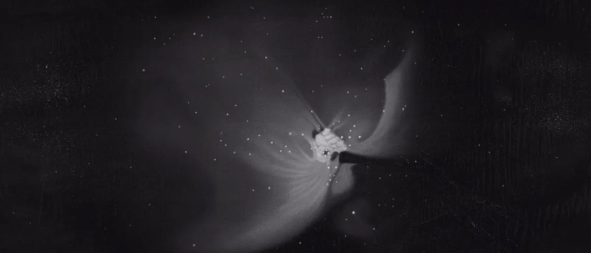
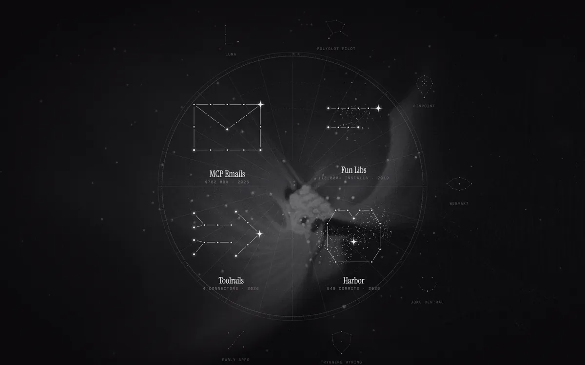
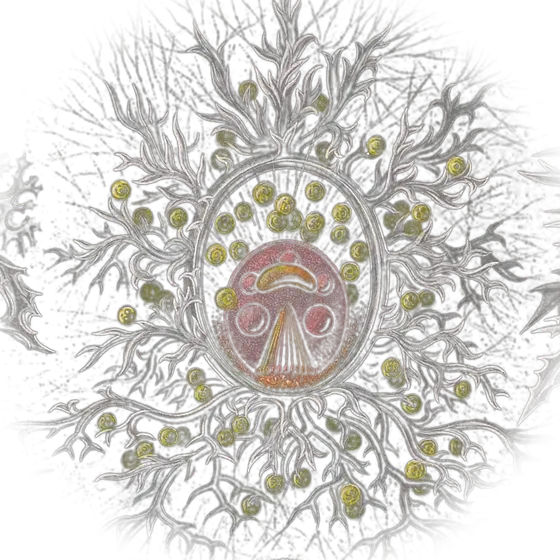
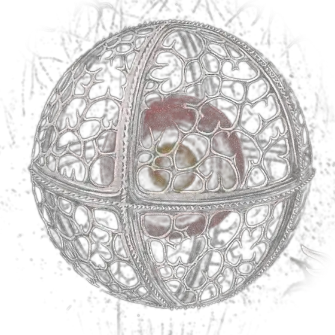
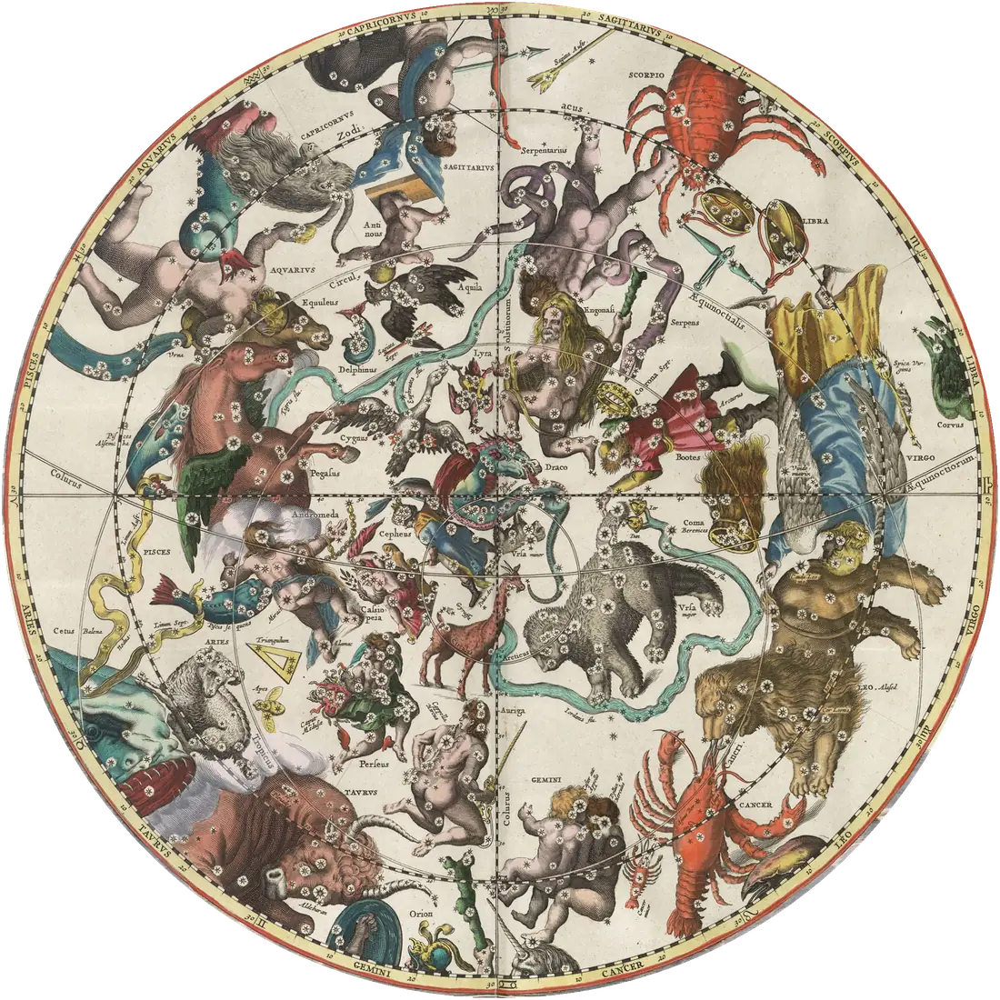
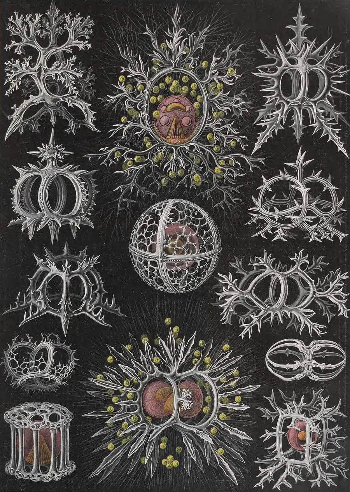
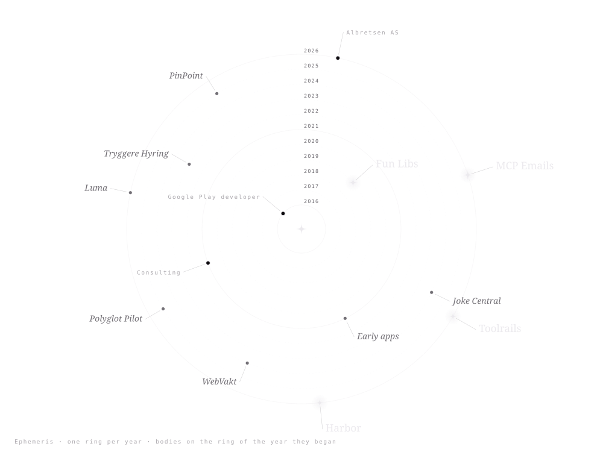

UranographiaA star atlas of working software
Asgeir Albretsen charts software that pays for itself.
Albretsen AS builds apps, SaaS and infrastructure for AI agents from Norway, and has shipped to Google Play since 2016. Every product below is drawn from one of its real numbers. Move the pointer and the stars lean toward it.



Tabulae I – IV
Four figures in the live sky, each drawn from one fact.
Seventeen stars for seventeen tools. One hundred and thirteen cluster stars for a hundred and thirteen thousand installs. Four bright feeders for four connectors. Five hundred and forty-nine grains of dust for five hundred and forty-nine commits. The logos sit in the lens, unaltered.
Globus caelestis
All 716 stars, on one sphere.
Every figure star and every grain of field dust from the four plates, carried on a celestial globe drawn entirely in SVG. Drag it. Let go and it keeps turning, then settles into a slow sidereal drift.
Behind it: Andreas Cellarius, Haemisphaerium Stellatum Boreale Antiquum, 1660. Hand-coloured; public domain.

Drag to turn · arrow keys work too
Constellationes obsoletae
Seven retired figures, kept on the chart.
Old atlases kept the constellations that astronomers stopped using. These are the products that were built, shipped and then set down. Luma keeps its real monogram; the others are stand-ins drawn in the house style.
Ephemeris 2016 – 2026
Ten rings, ten years.
One orbit per year. Each product sits on the ring of the year it began: Google Play developer in 2016, consulting from 2021, the company in 2026.

Ernst Haeckel, Kunstformen der Natur, Tafel 71, 1904. Biodiversity Heritage Library; public domain.
